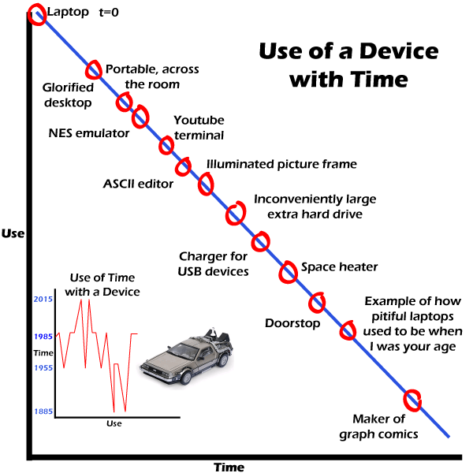

Comic JK 542
When I Feel Like It
⇤
<
?
>
⇥

⇤
<
?
>
⇥
Forum
.
RSS
.
Digg
.
Facebook
.
Reddit
.
Twitter
.
Stumbleupon
Enter your thoughts on number 542 here. Please, no spamming, trolling, or laptop abuse above 88mph. An existentialist laptop? ...Actually, I have one of those... I was once handed a broken laptop for which the original retailer refused to stock spare parts - apparently believing selling replacement parts to be beneath them - and for which the manufacturer refused to sell spare parts to anyone but the original retailer, who remember, refused to get involved with such things... > EBay is excellent for such situations. >>I used to think so too... and after two years was no nearer to getting the necessary part... >>>no other broken laptops of that model available anywhere? >>>>none I was able to find in a 2 year period... eBay, back-street repair shops, national chains, computer fairs, "laptop repairers" advertising in computer magazines... and not a single one turned up... it became a running joke after a while... I started calling it "The Highlander"... The smaller graph seems wrong. The axes should be swapped. >I seem to agree. >>I don't. The only reason why there is the smaller graph in the first place is that the axes are swapped. >>> As you use the time-car more, you travel to different times? >>>>Precisely. As shown in the well known timetravel documentation "Back to the Future", narrated by the former (no, latter, timetravelling gets me confused sometimes) Rock superstar M.McFly. However, I have to admit, while the big graph shows a regular relation between use and time, the small one rather only shows an example for a relation between time and use. Ok, and "use" in the small graph also has a totally different meaning then "use" in the big one... >>>>>Also, Dr. Brown even went to the future beyond 2015, if I remember correctly. >>>>>>Shouldn't this be modeled more as a step function? (except the rise from 1885 to 1955, which should be a very gradual slope since it was just sitting in a cave for 80 years) >>>>>>>Actually, that is correctly shown as the only step, because that travel through time happened *without using it*. So, no use between 1885 and 1955, therefor the step. All other travels happened by using it, therefor advancing on the use line. My only problem is, I can't remember them going back to 1985, before Doc gets struck by lightning and travels back to 1885... >>>>>>Yeah, that's clearly an error. And yes, I suppose you're right regarding the step. But there's no clear definition of how much use it takes to get from one time to the other. Also, there should be more steps for the times when they drive the Delorean without traveling through time. >>>>>>>when they drive it less than 88, the graph is horizontal, hence the plateaus occur mostly in 1985, but there's one in 1955. The laptop at t=0 has been used a lot in no time at all. > Perhaps the use is differential -- given an arbitrarily small amount of time, almost all of that time is spent using a new laptop, and almost none spent using a really old laptop. >>no, it's not that. the graph is just noncontinuous at t=0. notice the slight gap between the axis and the line. >>>so... use in infinitsimmal time? Nice back to the future graph! Took me a second to get it. Why does it look like the delorian went back to 1985 at the end of BTTF2 when it went to 1885? >And it would Also appear to be missing a step early on, because at the end of BTTF1, the DOC goes AT LEAST to 2015 before, and then returns to 1985 to fetch Marty and Jen, and then BACK to 2015. The graph shoes that there was one travel event to 2015 before Biff Tannen took it back to 1955. That being said, it was still a fun nod to BTTF and I quite enjoyed it. >>perhaps it should have a final spike to 2011 because of its use in this comic?